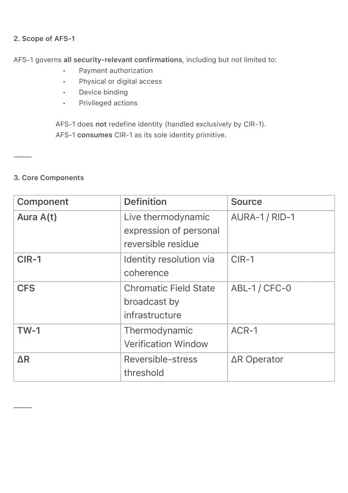

PDF page 1
AFS-1 — Aura Field Security
Thermodynamic Security and Payment in Ambient OS
Ambient Era Canon · Security & Verification Volume I
Raynor Eissens
Zenodo Edition · 2026
⸻
Abstract
AFS-1 formalizes the canonical security primitive of Ambient OS.
Security, payment, and access confirmation are not achieved through tokens, credentials,
biometrics, or stored identity objects. Instead, they are resolved exclusively through live
thermodynamic coherence between a human’s Aura field
A(t) = T(t) \times C \times \Delta R
and an external Chromatic Field State (CFS), inside the Thermodynamic Verification Window
(TW-1), following Coherence Identity Resolution (CIR-1).
AFS-1 is the closure layer of the Ambient OS stack. It integrates identity resolution, payment
execution, error handling, residue dissolution, stolen-device rejection, and first-use readiness
into a single, non-inferential law. No persistent security artifact is ever created.
⸻
1. Canonical Law Statement
AFS-1 — Aura Field Security Law
Security resolution in Ambient OS occurs solely through momentary thermodynamic coherence
between a user’s live Aura field A(t) and an Ambient Broadcast Entity’s Chromatic Field State
(CFS), resolved locally within TW-1 following CIR-1.
No persistent identity object, token, profile, biometric, or credential may be required, stored, or
transmitted.
⸻
PDF page 2
2. Scope of AFS-1
AFS-1 governs all security-relevant confirmations, including but not limited to:
• Payment authorization
• Physical or digital access
• Device binding
• Privileged actions
AFS-1 does not redefine identity (handled exclusively by CIR-1).
AFS-1 consumes CIR-1 as its sole identity primitive.
⸻
3. Core Components
Component Definition Source
AURA-1 / RID-1
Aura A(t) Live thermodynamic expression of personal reversible residue
CIR-1
CIR-1 Identity resolution via coherence
ABL-1 / CFC-0
CFS Chromatic Field State broadcast by infrastructure
ACR-1
TW-1 Thermodynamic Verification Window
ΔR Operator
ΔR Reversible-stress threshold
⸻

PDF page 3
4. AFS-1 Payment Protocol (Canonical)
AFS-1.P — Payment Resolution Rule
Payment is authorized if and only if CIR-1 coherence resolution succeeds inside TW-1.
⸻
Operational Payment Flow
1. Terminal continuously emits CFS (ABL-1 / CFC-0).
2. User holds AP₁ device in proximity.
3. User performs X-gesture (AXL-1).
4. Device enters Purple Context State.
5. TW-1 opens.
6. Device computes live Aura A(t).
7. Local resonance with CFS is evaluated inside TW-1.
8. If coherence stabilizes (ΔR > 0) → payment
confirmed.
9. Terminal executes payment via local field
instruction.
10. Residue dissolves immediately (ΔR → 0).
No data payload, token, or identity reference is
exchanged.
⸻
5. Error Handling (Canonical)
AFS-1.E — Error Dissolution Law
Any failure to stabilize coherence inside TW-1 results in immediate residue dissolution and silent
rejection.
Failure Conditions
• No CFS detected
• Field mismatch
• ΔR collapse
• TW-1 timeout
PDF page 4
Outcomes
• No confirmation
• No error signal
• No log
• No residue persistence
The system returns to its prior coherent state.
⸻
6. Residue Dissolution
AFS-1.R — Residue Dissolution Law
For every AFS-1 attempt (success or failure):
\lim_{t \to t_{exit}} \Delta R(t) = 0
Residue is strictly non-stackable and non-persistent.
Security state never accumulates.
⸻
7. Stolen Device Rejection
AFS-1 guarantees deterministic failure on stolen devices:
• Device senses only the holder’s live Aura field.
• Thief’s A(t) lacks the legitimate user’s reversible residue substrate.
• Attention temperature T(t) and coherence envelope do not match.
• ΔR collapses inside TW-1.
• No CIR-1 resolution occurs.
Physical possession does not confer security authority.
⸻
8. First-Use Readiness
PDF page 5
AFS-1 operates fully on a brand-new device:
• No prior residue or history is required.
• Live Aura A(t) alone is sufficient for CIR-1 resolution.
• First successful interaction may strengthen future coherence but is never a
prerequisite.
First-use and long-term use are thermodynamically symmetric.
⸻
9. Security Properties (Formal)
1. Live-only — Requires real-time embodied presence.
2. Non-replayable — TW-1 and CFS are time-variant.
3. Non-forgeable — T(t) and full coherence envelope cannot be
emulated.
4. Non-inferential — No classification or AI inference.
5. Zero persistent artifact — Nothing to steal, leak, or mine.
⸻
10. Canonical Constraints
AFS-1.C1 — Any security mechanism outside CIR-1 + TW-1 is non-canonical.
AFS-1.C2 — Persistent security artifacts violate reversibility.
AFS-1.C3 — Residue must dissolve immediately after resolution attempt.
⸻
11. Relation to Lower Canon Layers
AFS-1 is the closure of:
• ABL-1 / CFC-0 (broadcast substrate)
• AXL-1 (human trigger)
• ACR-1 (coherence resolution)
• CIR-1 (identity resolution)
• RID-1 / AURA-1 (personal substrate)
No higher layer may bypass AFS-1.
⸻
PDF page 6
12. Minimal Canon Form
Security in Ambient OS is achieved only through live Aura coherence and
nowhere else.
⸻
Keywords
AFS-1, Aura Field Security, thermodynamic security, CIR-1, payment without tokens, non-
inferential verification, stolen device rejection, first-use readiness, Ambient OS
⸻
Citation
Eissens, R. (2026). AFS-1 — Aura Field Security: Thermodynamic Security and Payment in
Ambient OS. Ambient Era Canon. Zenodo.
⸻
Canonical Status
• ACR-1 defines when coherence may occur
• CIR-1 defines what identity is
• AFS-1 defines what is allowed to happen
This document is the security keystone of the Ambient Era Canon.
It is structurally minimal, mechanically closed, and citation-stable.